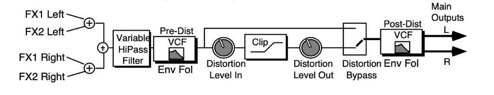
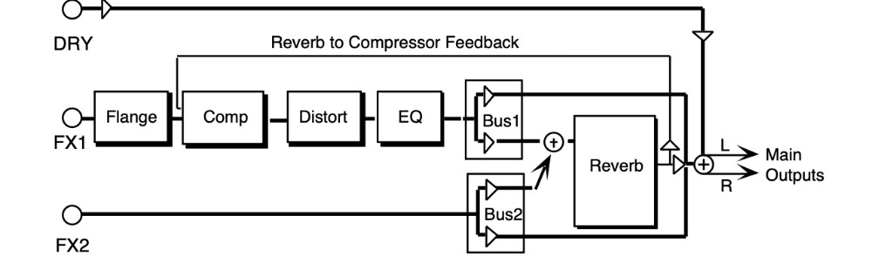
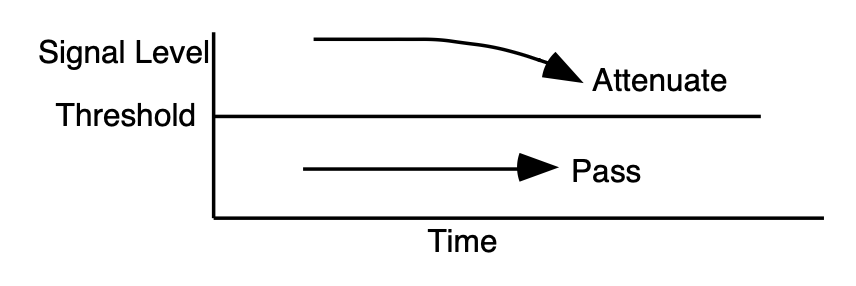

Performance / Composition Synthesizer · Version 3.0
Section 7 — Effect Parameters (60–73 Amp/Filter)
60 ROTARY SPEAKER + REV
A rotating speaker simulation with reverb and distortion. Assign a voice to FX-1 to get reverb after the rotary speaker with distortion, or use FX-2 for reverb only. There are Variations on the first sub-page for the Rotary Speaker without Distortion.
DIST INPUT/OUTPUTRange: 00 to 99
The DIST INPUT parameter determines the input signal gain into the amplifier simulation, creating a tube-like overdrive.
The DIST OUTPUT parameter controls the output of the amplifier distortion. There is a (fixed) clean path in parallel with the distortion. Therefore, to eliminate distortion, set this parameter to 00.
FILTERRange: 00 to 99
A three-pole, low pass filter following the amplifier simulation. Controls the filter cutoff resulting in a brighter sound (for higher values) or a darker sound (low values).
SPKR GAINRange: 00 to 99
Controls the level of the signal (distorted or not) applied to the rotary speaker. High gain will simulate a broken speaker. Also use higher settings when using little or no distortion, because distortion raises the signal level to the speaker.
ROTOR SLOWRange: 00 to 99
Determines the rate of the rotary speaker when in the “Slow” setting. ROTOR SLOW determines the manual level for the rotary speaker rate when SPEED= SLOW, or when the selected modulator is at zero output level. Again, the higher the value, the faster the rate.
FASTRange: 00 to 99
Determines the rate of the rotary speaker when in the “Fast” setting. The higher the value, the faster the rate.
INERTIARange: 00 to 99
Determines how long it will take for the rotor effect to speed up and slow down after switching from fast to slow or vice versa. Adjust this parameter to simulate the effect of the rotary speaker gradually picking up speed.
SPEEDRange: SLOW or FAST
Determines how the rotary speaker will switch between slow and fast speeds. The behavior of the switch accurately reflects an actual rotary speaker, taking time to speed up or slow down, based on the value of the INERTIA parameter (see previous description). Any effect modulator can act as the SPEED SLOW or FAST controller. How the modulators will switch the rotor speed fall into two categories:
- WHEEL, PBEND, PEDAL, TIMBR, XCTRL, PRESS(ure), KEYBD, and VELOC — These modulation sources act like a switch to turn on or off the fast rotor speed. To reverse the polarity of the switch, set ROTOR SLOW faster than ROTOR FAST.
- KEYDN, PATCH, SUSTN, SOSTU, FX-SW — These modulation sources toggle the rotor speed between slow and fast. Every time the modulation source moves from zero in a positive direction, the rotating speaker effect changes speeds from slow to fast or fast to slow.
DECAY TIMERange: 0.20 to 100.0
Controls the amount of time it takes for the reverberation to decay to a low level (-60 dB) after the input signal stops.
HF - DAMPINGRange: 00 to 99
Controls the rate of attenuation of high frequencies in the decay of the reverberation. As natural reverb decays, some high frequencies tend to get absorbed by the environment. Increasing the value of this parameter will filter out increasing amounts of high-frequency energy.
DIFFUSIONRange: 00 to 99
Determines whether the early reflections will appear as a series of discrete echoes (lower values) or will be more diffused (higher values).
61 SPEAKER CABINET
SPEAKER CABINET simulates the warm sound of an open-back speaker cabinet. SPEAKER CABINET is fabulous for a guitar, bass or any other stringed instrument sound. This algorithm contains the resonances and the non linearity of a real musical instrument speaker. The FX-1 and FX-2 parameters can be routed into the effect with different Dry/Wet mixes. For a brighter speaker emulation, try using TUNABLE SPEAKER.
OUTPUT GAINRange: -48 to +24 dB
Since speaker cabinets are “lossy,” output gain is required to compensate losses in perceived volume. Setting this gain too high will cause clipping of the output signal.
62 TUNABLE SPEAKER
TUNABLE SPEAKER offers an EQ controllable speaker sound that is brighter than SPEAKER CABINET. By tuning three parametric filters, you can simulate many different speaker cabinet sounds that are used in all styles of music. The FX-1 and FX-2 parameters can be routed into the effect with different Dry/Wet mixes.
MID-1 FCRange: 0000 to 9999 Hz
This parameter sets the center of the mid-frequency parametric. Higher values have a brighter sound.
QRange: 01 to 18
This parameter is a bandwidth control that determines the width of the resonant peak at the center of the-frequency band. By raising the value, you can produce a narrower bandwidth.
LEVELRange: -48 to +24 dB
This parameter sets the amount of cut (negative values) or boost (positive values) applied to this mid-frequency parametric.
| MID-2 FC | MID-3 FC |
| Q | Q |
| LEVEL | LEVEL |
These parameters are similar to the previous ones, but can be assigned to control different bandwidths within the mid-range.
INPUT LEVELRange: -24 to +00 dB
Lets you to adjust the input level before the EQs to eliminate the possibility of clipping boosted signals.
OUTPUT LEVELRange: -48 to +24 dB
Since speaker cabinets are “lossy,” output gain is required to compensate for losses in perceived volume. Setting this gain too high will cause clipping of the output signal.
63 GUITAR AMP 1
64 GUITAR AMP 2
These algorithms recreate the warm sound of a guitar tube amplifier. They do this by emulating tube distortion characteristics. These algorithms are good for all stringed instrument sounds.
GUITAR AMP 1, designed for Hard Rock, offers more distortion than GUITAR AMP 2, which is optimized for “bluesy” type sounds. The EFFECT MIX FX-1 and FX-2 parameters can be routed into the effect with different Dry/Wet mixes.
PREAMP GAINRange: -48 to +48 dB
This parameter adjusts the amount of boost or cut applied to the incoming signal. We recommend a setting of +0 dB, since these emulations were optimized for distortion there. Lower preamp gains will result in less distortion, while higher preamp gains will yield clipping distortion. For low preamp gain, it may be desirable to use low tube bias values.
MAIN LEVELRange: 00 to 99
Controls the output level of the main amp before the output EQ.
TUBE BIASRange: 00 to 99
For preamp gains approximately 00 dB, this parameter controls the emphasis of even to odd harmonics which determines the tone of the amp; mid values emphasize even harmonics and offer a warmer (“glowing tube”) sound, while the highest values may sound like tubes going bad. Tube bias and preamp gain are independent parameters. For low preamp gain, it may be desirable to use low tube bias values, because this more closely imitates the operation of a real amplifier.
PREAMP EQ TRIMRange: -24 to +00 dB
Controls the input level to the pre-amp EQ to eliminate the possibility of clipping boosted signals.
HIGH FCRange: 4 to 1000 Hz
Filters out the low frequencies before the preamp. The higher the value, the less low frequencies pass through.
MID FCRange: 0000 to 9999 Hz
Determines the center-frequency of the parametric filter before the preamp. Higher values have a brighter sound.
QRange: 01 to 18
Determines the width of the resonant peak at the parametric filter center-frequency. While the Filter center parameter determines where (at what-frequency) this peak will occur, the Q setting controls the presence of the peak.
LEVELRange: -48 to +24 dB
Adjusts the amount of boost or cut applied to the parametric filter in front of the preamp.
GATE - OFFRange: -96 to +00 dB
Sets the lower threshold level at which the noise gate shuts off the audio.
ONRange: -96 to +00 dB
Sets the upper threshold level at which the noise gate passes the audio. The higher second threshold prevents false “turn ons.”
RELEASERange: 1 msec to 10.0 sec
Sets the amount of time after the signal has elapsed for the noise gate to shut down. For a longer sustain, set this parameter higher.
HIGH FCRange: 4 to 1000 Hz
Filters out the low frequencies of the main amp prior to the speaker. The higher the value, the less low frequencies pass through.
LOW FCRange: 2.0 to 15.0 KHz
Filters out the high frequencies of the speaker. The lower the value, the less high frequencies pass through. This speaker filter is less selective than the speaker cabinet emulation algorithms.
MAIN EQ MID-1 FCRange: 0000 to 9999 Hz
Determines the filter center-frequency of the parametric in the main amp stage. Higher values have a brighter sound.
QRange: 01 to 18
Determines the width of the resonant peak of the filter center. While the Filter center parameter determines where (at what-frequency) this peak will occur, the Q setting controls the presence of the peak.
LEVELRange: -48 to +24 dB
Adjusts the amount of boost or cut applied to the main amp parametric.
MAIN EQ MID-2 FCRange: 0000 to 9999 Hz
Determines the filter center-frequency of the second parametric in the main amp stage. Higher values have a brighter sound.
QRange: 01 to 18
Determines the width of the resonant peak of the second filter center.
LEVELRange: -48 to +24 dB
Adjusts the amount of boost or cut applied to the second main amp parametric.
65 GUITAR AMP 3
GUITAR AMP 3 combines an inverse expander with a bright distortion for amp lead sounds.
The inverse expander may be thought of as a compressor that amplifies all signals below the threshold. This algorithm is good for heavy metal and hard rock guitar solos. The FX-1 and FX-2 parameters can be routed into the effect with different Dry/Wet mixes.
PREAMP GAINRange: -48 to +48 dB
Adjusts the amount of boost or cut applied to the EQ’d incoming signal. Lead sounds are obtained using high gain.
MAIN LEVELRange: 00 to 99
Controls the output level before the output EQ.
EXPANDER - RATIORange: 1:1 to 40:1, infinity
Sets the amount of inverse expansion. Expansion occurs below the threshold. If this is set to 3:1 for example, it will expand the change in signals below the threshold by three times in an attempt to make the signal amplitude approach the threshold level.
THRESHRange: -96 to +00 dB
Sets the inverse expander threshold level. Signals beneath this level will be expanded, while signals that are above will be unaffected. As the input signal dies away below the threshold, the expander will increase the gain of the signal.
PREAMP EQ TRIMRange: -24 to +00 dB
Controls the input level to the preamp EQ to eliminate the possibility of clipping boosted signals.
MID FCRange: 0000 to 9999 Hz
Determines the filter center-frequency of the parametric in the preamp stage. Higher values have a brighter sound.
QRange: 01 to 18
Determines the width of the resonant peak at the filter center. While the Filter center parameter determines where (at what-frequency) this peak will occur, the Q setting controls the presence of the peak.
LEVELRange: -48 to +24 dB
This parameter adjusts the amount of boost or cut applied to the preamp parametric.
GATE - OFFRange: -96 to +00 dB
Sets the lower threshold level at which the noise gate shuts off the audio.
ONRange: -96 to +00 dB
Sets the upper threshold level at which the noise gate passes audio. This higher second threshold prevents false “turn ons.”
RELEASERange: 1 msec to 10.0 sec
Sets the amount of time after the signal has elapsed for the noise gate to shut down. For a longer sustain, set this parameter higher.
HIGH FCRange: 4 to 1000 Hz
Filters out the low frequencies of the main amp prior to the speaker. The higher the value, the less low frequencies pass through.
LOW FCRange: 2.0 to 15.0 KHz
Filters out the high frequencies of the speaker. The lower the value, the less high frequencies pass through. True speaker emulations are provided as separate algorithms.
MID-1 FCRange: 0000 to 9999 Hz
Determines the filter center-frequency of the parametric in the main amp stage. Higher values have a brighter sound.
QRange: 1 to 18
Determines the width of the resonant peak at the filter center. While the Filter center parameter determines where (at what-frequency) this peak will occur, the Q setting controls the presence of the peak.
LEVELRange: -48 to +24 dB
Adjusts the amount of boost or cut applied to the main amp parametric.
MID-2 FCRange: 0000 to 9999 Hz
Determines the filter center-frequency of the second parametric in the main amp stage. Higher values have a brighter sound.
QRange: 01 to 18
Determines the width of the resonant peak of the second filter center.
LEVELRange: -48 to +24 dB
Adjusts the amount of boost or cut applied to the second main amp parametric.
66 VCF- -DISTORTION- -VCF
VCF- -DISTORTION- -VCF combines a voltage control filter, a raspy distortion, and a second voltage control filter. Three effects can be obtained: Distortion, Wah-wah, and Auto-wah. The last two functions use the same VCF. These filters can be disabled or used as EQ if desired. The second VCF that exists after the distortion can be set to act like a simple speaker simulator, or it can be modulated in parallel with the pre-distortion VCF.

The EFFECT MIX FX-1 and FX-2 parameters can be routed into the algorithm with different Dry/Wet mixes.
DIST LEVEL - INRange: 00 to 99
Controls the gain going into the distortion effect. DIST LEVEL - IN will boost the signal level up to 48 dB. For more distortion, use a high input level gain and turn the OUT down to keep the volume under control. For less distortion, use a low gain input level and a higher output volume.
OUTRange: 00 to 99
Controls the gain coming out of the distortion effect. Generally, if the DIST LEVEL - IN is set high, set this parameter lower to control the volume.
BYPASSRange: OFF or ON
Allows you to bypass the distortion (as shown on the signal routing diagram).
PRE-EQ HIGH FCRange: 0000 to 1000 Hz
Filters out the low frequencies before the EQ. The higher the value, the less low frequencies will pass through.
PRE-DIST VCF FCRange: 01 to 99
Determines the filter cut off-frequency before the distortion. Higher values have a brighter sound. This parameter can be modulated, using a CV Pedal for a wah-wah pedal effect. To disable the distortion filter, set this parameter to 99. To use as an EQ, set the desired value and make sure ENV AMT is +00. To use as the auto-wah, set this parameter close to 01 (lower values) and turn on ENV AMT.
QRange: 01 to 25
Determines the level and width of the resonant peak at the filter cutoff point. While the PRE-DIST VCF FC parameter determines where (at what-frequency) this peak will occur, the Q setting controls the presence of the peak. This setting is important for the auto-wah effect.
ENV AMTRange: -99 to +99
Determines how much the amplitude of the incoming signal will modify the distortion filter cutoff-frequency. When set to +00, no modification will occur. When set to mid positive values, the PRE-DIST VCF FC will go high, but then come down to its nominal setting. When set to negative mid values, the PRE-DIST VCF FC will go low, and then go back up to its nominal setting How quickly it does so is determined by the ATTACK and RELEASE parameters. This sound is the auto-wah; positive values will boost the high frequencies, offering an “oww-oww” sound, and negative values will cut the high frequencies, producing a “dweep-dweep” sound.
POST-DIST VCF FCRange: 01 to 99
Determines the filter cut off-frequency after the distortion. Higher values have a brighter sound.
This parameter can also be modulated, using a CV Pedal for a wah-wah pedal effect. To disable the post-distortion filter, set this parameter to 99.
QRange: 01 to 25
Determines the level and width of the resonant peak at the filter cutoff point. While the POST-DIST VCF FC (filter cutoff) parameter determines where (at what-frequency) this peak will occur, the Q setting controls the presence of the peak. This setting is important for the auto-wah effect.
ENV AMTRange: -99 to +99
Determines how much the amplitude of the incoming signal will modify the distortion filter cutoff-frequency. When set to +00, no modification will occur. When set to mid positive values, FC will go high, but then come down to its nominal setting. When set to negative mid values, FC will go low, and then go back up to its nominal setting How quickly it does so is determined by the ATTACK and RELEASE parameters. This sound is the auto-wah; positive values will boost the high frequencies, offering an “oww-oww” sound, and negative values will cut the high frequencies, producing a “dweep-dweep” sound.
ATTACKRange: 50 µsec to 10.0 sec
Sets the attack of the envelope follower (i.e. determines how closely the attack is followed) once the incoming signal has been detected. Generally the attack should be short.
RELEASERange: 1 msec to 10.0 sec
Sets the amount of time after the incoming signal has ceased for the envelope follower to shut down. Generally these times are longer than the attack times.
67 WAH- -DISTORTION + REV
A guitar and amp simulator, featuring distortion, compression, reverb, and a resonant filter following the amplitude of the signal. Assign a sound to FX-1 for reverb after Wah distortion, or use FX-2 for reverb only.
DIST INPUT and OUTPUTRange: 00 to 99
These two parameters control the levels going into and coming out of the distortion effect. For more distortion, use a high input level and turn the output level down to keep the volume under control. For less distortion, use a low input level and a higher output level.
WAH - CENTERRange: 00 to 99
Determines where the resonant peak of the wah will occur. High values yield a higher pitched wah.
RANGERange: -99 to +99
Controls how much depth the wah will have. This is analogous to how far you move a wah-wah pedal back and forth.
DECAY TIMERange: 0.20 to 100.0
Controls the amount of time it takes for the reverberation to decay to a low level (-60 dB) after the input signal stops.
HF - DAMPINGRange: 00 to 99
Controls the rate of attenuation of high frequencies in the decay of the reverberation. As natural reverb decays, some high frequencies tend to get absorbed by the environment. Increasing the value of this parameter will filter out increasing amounts of high-frequency energy.
FEEDBACKRange: -99 to +99
Controls the amount of signal applied from the output of the reverb back into the input of the compressor. The sign of the value determines the polarity of the feedback.
COMPRESSOR THRESHRange: 00 to 99
Controls the threshold level for the compressor. As the input signal dies away below the threshold, the compressor will increase the gain of the system, causing feedback to increase as well. Normal compression is 72.
68 FLNG- -CMP- -DIST + REV
A screaming guitar-and-amp simulator that features not only compression, distortion, and reverb, but flanging and EQ as well. FX-1 routes the signal through each of these effect processors, while FX-2 is used for reverb only.

COMPRESSOR THRESHRange: 00 to 99
Controls the threshold level for the compressor. As the input signal dies away below the threshold, the compressor will increase the gain of the system, causing feedback to increase as well. Normal compression is 72.
FLANGE RATERange: 00 to 99
Controls the rate of modulation of the notches due to the flanger effect. A setting of 00 effectively turns the flanger off.
DIST INPUT and OUTPUTRange: 00 to 99
Control the levels going into and coming out of the distortion effect. For more distortion, use a high input level and turn the output level down to keep the volume under control. For less distortion, use a low input level and a higher output level.
FILTER - LOW FC/HIGH FCRange: 00 to 99
The LOW FC parameter filters out high frequencies after the distortion signal path. The lower the value, the less high frequencies pass through. The HIGH FC parameter filters out low frequencies after the distortion signal path. The higher the value, the less low frequencies pass through.
DECAY TIMERange: 0.20 to 100.0 msec
Controls the amount of time it takes for the reverberation to decay to a low level (-60 dB) after the input signal stops.
HF - DAMPINGRange: 00 to 99
Controls the rate of attenuation of high frequencies in the decay of the reverberation. As natural reverb decays, some high frequencies tend to get absorbed by the environment. Increasing the value of this parameter will filter out increasing amounts of high-frequency energy.
FEEDBACKRange: -99 to +99
Controls the amount of signal applied from the output of the reverb back into the input of the compressor. The sign of the value determines the polarity of the feedback.
69 DISTORT + CHORUS- -REV
A brighter guitar-and-amp simulator that features distortion, chorus, and reverb, but without the compressor. The FX-1 and FX-2 MIX parameters can be routed into the effect with different
Dry/Wet mixes.
DIST MIXRange: 00 to 99
Determines the Dry/Wet, or in this case, dirty/clean mix of the signal. A value of 00 yields a clean signal; 99 yields an all distortion signal.
INPUT and OUTPUTRange: 00 to 99
These two parameters control the levels going into and coming out of the distortion effect. For more distortion, use a high input level and turn the output level down to keep the volume under control. For less distortion, use a low input level and a higher output level.
FILTER - FCRange: 00 to 99
This determines the filter cutoff-frequency (brightness) of the distortion.
QRange: 01 to 25
Determines the level of the resonant peak at the filter cutoff point. While the FILTER - FC parameter determines where (at what-frequency) this peak will occur, the Q setting controls the presence of the peak.
CHORUS MIXRange: 00 to 99
Controls the Dry/Wet mix within the chorus itself.
RATERange: 00 to 99
Controls the four rates of modulation of the delay time of the chorus. The delay modulation produces vibrato and tremolo.
WIDTHRange: 00 to 99
Controls the depth of vibrato and tremolo.
DECAY TIMERange: 0.20 to 100.0
Controls the amount of time it takes for the reverberation to decay to a low level (-60 dB) after the input signal stops.
EARLY REF LEVRange: 00 to 99
Controls the level of pre-echoes of the input signal added directly to the reverb output.
HF - DAMPINGRange: 00 to 99
Controls the rate of attenuation of high frequencies in the decay of the reverberation. As natural reverb decays, some high frequencies tend to get absorbed by the environment. Increasing the value of this parameter will filter out increasing amounts of high-frequency energy.
BANDWIDTHRange: 00 to 99
Acts as a low pass filter on the signal going into the reverb, controlling the amount of high frequencies that will pass into the effect. The higher the setting, the more high frequencies are allowed to pass.
LF DECAYRange: -99 to +99
This control will boost or cut the rate at which low frequencies will decay.
DETUNE - RATERange: 00 to 99
Controls the LFO rate of detuning incorporated within the reverb. Detuning creates a slight pitch shift into the reverberated signal, giving it a more natural sounding decay by breaking up resonant nodes.
DEPTHRange: 00 to 99
Controls the depth of the detuning, that is, how much the pitch will change. Low values yield a metallic sound. Some voices sound best with very low values.
70 PARAMETRIC EQ
PARAMETRIC EQ offers a minimum phase four band parametric EQ.
EQ TRIMRange: -24 to +00 dB
Allows you to adjust the input level trim to the EQs to eliminate the possibility of clipping boosted signals.
BASS FCRange: 0000 to 1000 Hz
Sets the center of the low-frequency parametric.
LEVELRange: -48 to +24 dB
Sets the amount of boost or cut applied to this low-frequency parametric.
TREBLE FCRange: 01 to 15 KHz
Sets the center-frequency of the high-frequency parametric.
LEVELRange: -48 to +24 dB
Sets the amount of boost or cut applied to this high-frequency parametric.
MID-1 FCRange: 0000 to 9999 Hz
Sets the center of the mid-frequency parametric.
QRange: 01 to 18
This parameter is a bandwidth control that determines the width of the resonant peak at the center-frequency band. By raising the value you can produce a narrower bandwidth.
LEVELRange: -48 to +24 dB
Sets the amount of boost or cut applied to this mid-frequency parametric.
MID-2 FC
Q
LEVEL
These three parameters are identical to the previous three parameters, and are used to control different bandwidths within the mid range.
71 EQ- -COMPRESSOR
EQ- -COMPRESSOR combines an EQ with a full-feature compressor. For high compressor ratios, this algorithm functions as a limiter. This algorithm operates by compressing (attenuating) signals above the threshold and passing the signals below the threshold. For higher ratios and lower thresholds, this algorithm can be used to create sustain. EQ exists in both signal and side chain paths.

COMPRESSOR RATIORange: 1/1 to 40/1, infinity
Sets the amount of compression. The range is based on decibels (dB) above the threshold. If this is set to 4/1 for example, it will compress changes in signals above the threshold by one quarter.
When this is set to infinity, it acts as a limiter.
THRESHRange: -96 to +00 dB
Sets the threshold level. Signals that exceed this level will be compressed, while signals that are below will be unaffected. To turn off the compressor, set the level to +00 dB.
ATTACKRange: 50 µsec to 100 msec
Determines the attack rate after the initial signal has been detected and before the compression takes affect.
RELEASERange: 01 msec to 10.0 sec
Determines how long it takes for the compression to be fully deactivated after the input signal drops below the threshold level. This is generally chosen longer than the attack time.
GATE - OFFRange: -96 to +00 dB
Sets the lower threshold level at which the noise gate shuts off the audio.
ONRange: -96 to +00 dB
Sets the upper threshold level at which the noise gate passes audio. This higher second threshold prevents false “turn ons.”
RELEASERange: 1 msec to 10.0 sec
Determines how long it takes for the gate to be fully released after the input signal drops below the threshold level. Lower settings yield a quick gate.
COMPRESSOR - OUTPUT GAINRange: -48 to +48 dB
Boosts the compressed signal level. Also known as "make-up gain."
EQ TRIMRange: -24 to +00 dB
Allows you to adjust the input volume of the EQs, to eliminate the possibility of clipping boosted signals.
BASS FCRange: 0000 to 1000 Hz
Sets the cutoff-frequency of the lower-frequency band shelving filter.
LEVELRange: -48 to +24 dB
Sets the amount of boost or cut applied to the low shelving filter.
TREBLE FCRange: 01KHz to 15KHz
Sets the cutoff-frequency of the upper-frequency band high shelving filter.
LEVELRange: -48 to +24 dB
Sets the amount of boost or cut applied to the high shelving filter.
72 RUMBLE FILTER
RUMBLE FILTER is a high pass filter in cascade with a low pass filter, fourth order (24dB per octave). The high pass filter is good for eliminating low end rumble. The low pass filter is good for eliminating hiss. The EFFECT MIX FX-1 and FX-2 FILTER parameters can be routed into the effect with different Dry/Wet mixes. For this algorithm, we recommend mid value Mixes.
HIGH FCRange: 4 to 8000 Hz
Controls the boost or cut of the high pass filter-frequency applied to the input signal.
LOW FCRange: 100 Hz to 15 KHz
Controls the boost or cut of the low pass filter-frequency applied to the input signal.
GAINRange: -48 to +48 dB
Because the cascade of high pass with low pass causes an insertion loss, this parameter allows you to boost the filtered output signal.
73 VAN DER POL FILTER
VAN DER POL FILTER adds synthetic high harmonics to the input signal, brightening the overall sound. This algorithm is most often used in the studio for vocalists, but feel free to experiment with this algorithm using your favorite instrument as well. This algorithm features prominent transient enhancement that makes it ideal for “plucked” sounds. The filter in this algorithm operates on the signal prior to enhancement. Set the filter to enhance the-frequency region that you desire. Then use the EFFECT MIX FX-1 parameter to mix the enhanced signal with the dry signal. For this algorithm we recommend mid values of the Mix.
HIGH FCRange: 4 to 8000 Hz
Controls the boost or cut of the high pass filter-frequency applied to the input signal.
LOW FCRange: 100 Hz to 15 KHz
Controls the boost or cut of the low pass filter-frequency applied to the input signal.
GAINRange: -48 to +48 dB
Because the cascade of high pass with low pass causes an insertion loss, this parameter allows you to boost the filtered output signal.